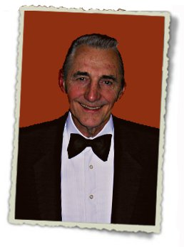
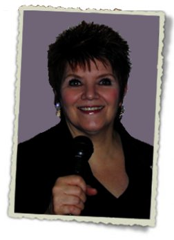

ABOUT US

Frank's Bio
Frank began his music career in his home town of Wisconsin playing with a
three-piece band. He moved to Chicago early in his career to continue studying
and performing with various groups. He formed his own band while continuing
to play with many Chicago entertainers. While accordion was his childhood
instrument, he also plays both piano and synthesizer.
With 45 years of experience as a full-time musician, his performances and reputation are well known. Frank’s experience and knowledge of the music business is a vital asset that customers appreciate. His dedication and commitment in his work is exemplary. Frank performed three years at the Drake Hotel in Chicago and a few years at various Holiday Inns. He also played three years at the Como Inn, a popular Italian Restaurant. In addition to entertaining, Frank received a Bachelor’s Degree in Music Education, teaching in the Chicago school system and privately.

Fran's Bio
Fran has performed as a professional lead vocalist, vocalist/drummer for over 22 years in rock groups,
hotel dance groups, ballroom orchestras and finally, Frank "K" & Co.
Fran started her professional career as a rock drummer and lead vocalist/drummer playing clubs across the midwest. in addition, as a member of a rock group, she performed in one of the local bands that opened up for national known rock, including The Buckinghams and The American Breed, traveling throughout the midwest. An offer to play in a “house band” at one of the Hyatt hotels gave her the experience in singing and playing drums for all styles of dance music. in addition to this, she performed as a vocalist/drummer for band leaders playing for private parties and ballroom orchestras such as the Glendora and Willowbrook ballrooms. Since 2002, Fran has been the lead vocalist/drummer and “DJ” for Frank "K" & Co. Fran's contribution to Frank "K" & Company has been the concept of combining live music along with her performance as a DJ to satisfy all age groups. |
Contact Us - (847)967-1184 Email - 
© 2012 Frank "K" Music - Created by First Circle Design